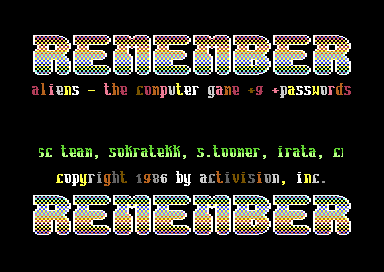
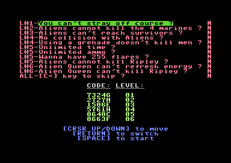

<meta charset="utf-8">
<meta name="viewport" content="width=device-width, initial-scale=1">
<title>{{title}}</title>
<link rel="preconnect" href="https://fonts.googleapis.com">
<link rel="stylesheet" href="https://fonts.googleapis.com/css2?family=Lato:wght@400;700;900&family=IBM+Plex+Mono:wght@400;500&display=swap">
<link rel="stylesheet" href="reference/aliens-page.css">
<!-- tabs -->
<header class="hero">
  <p class="eyebrow">{{platform}} · {{year}} · {{publisher}}</p>
  <h1>{{title}}</h1>
  <p class="sub">What the code holds that the game never shows: a sound nobody hears, routines nothing calls, a test that reads the wrong byte, and the marks a cracker left on the disk.</p>
</header>
<main class="wrap" data-part="engine">
<section id="rumble">
  <p class="fig">01 · A silent effect</p>
  <h2 class="t">One of the sixteen sound effects is never played</h2>
  <p class="lede">The engine holds sixteen sound effects, and fifteen of them are started somewhere in the game. The sixteenth, <code>sfx_rumble</code> (<a href="source-engine.html#3a74"><code>$3A74</code></a>), is complete and works, but no stage starts it.</p>
  <p>An effect is started by a call to <code>start_effect</code> (<a href="source-engine.html#2a79"><code>$2A79</code></a>) with the effect's address in the two bytes after the call. A search of the engine and all nine stage files found no call naming <code>$3A74</code>, and the address appears nowhere else in their memory. The <a href="music.html#effects">Music tab</a> plays it, with the other fifteen.</p>
</section>

<section id="skip">
  <p class="fig">02 · Skipping a level</p>
  <h2 class="t">The game's own skip costs the ending, and the crack's does not</h2>
  <p class="lede">The manual tells players stuck on a level how to skip it: hold a key and press RESTORE. It warns that a game with a skipped level never reaches the final screen. The code keeps that promise with a single byte, and the cracked disk studied here adds a skip of its own that leaves the byte alone.</p>
  <p>With the up-arrow key held, RESTORE leads to <code>stage_abort</code> (<a href="source-engine.html#08ac"><code>$08AC</code></a>), which sets <code>$0202</code> to <code>$FF</code> and ends the stage without its status screen. From then until a new game, <code>make_code</code> (<a href="source-engine.html#1720"><code>$1720</code></a>) writes no code, so the status screen shows five asterisks, and the ending (<a href="source-queen.html#88da"><code>$88DA</code></a>) skips Bishop, the hypersleep text, and The End.</p>
  <p>The crack's trainer adds a second skip on the Commodore key (<code>trainer_skip</code>, <a href="source-engine.html#3b01"><code>$3B01</code></a>). It ends the stage as if it had been won, through the status screen, and it clears <code>$0202</code> as it does (<code>skip_pressed</code>, <a href="source-engine.html#3b1e"><code>$3B1E</code></a>). A player using the crack's key still gets codes and the ending, which the game's own skip was written to deny.</p>
</section>

<section id="zone">
  <p class="fig">03 · A slip in the ducts</p>
  <h2 class="t">Level 4 tests a byte in memory where it meant a number</h2>
  <p class="lede">In the air duct maze, aliens come out of vents chosen by zones of the map. The routine that finds a cell's zone has an instruction that reads the wrong thing.</p>
  <p>Each cell of the maze has two zones, four bits each, in a table at <code>$9530</code>. <code>zone_of</code> (<a href="source-level4.html#91c7"><code>$91C7</code></a>) takes the low four bits, or the high four when a test is set. The test ANDs a byte with <code>$05</code>, written as <code>AND $05</code>, which reads memory location 5, rather than <code>AND #$05</code>, the number 5. It also indexes a table by a register the routine does not set. Which of a cell's two zones it gives therefore depends on bytes the routine does not control.</p>
</section>

<section id="leftovers">
  <p class="fig">04 · Leftovers</p>
  <h2 class="t">Code that nothing calls</h2>
  <p class="lede">Every byte of the game has been accounted for, and a few turn out to be unreachable: routines with no call, and odd instructions stranded between others.</p>
  <ul>
    <li><b>A volume routine.</b> Sixteen bytes at <a href="source-engine.html#28cf"><code>$28CF</code></a> that no jump, call, or table names. They set the volume and start a tune, and their tune address would be the bytes that follow them, so they could not have worked where they sit. They are probably left over from an earlier version of the sound code.</li>
    <li><b>A second way to choose the video bank.</b> Eleven bytes at <a href="source-engine.html#22d1"><code>$22D1</code></a> that would select video bank 1 directly. Nothing reaches them; the game uses another routine.</li>
    <li><b>The ending that wasn't.</b> In the Queen fight's file, a routine at <a href="source-queen.html#8a55"><code>$8A55</code></a> waits, starts tune 2, and clears the marker count, and nothing jumps to its first instruction.</li>
    <li><b>Fourteen bytes in the briefing.</b> After the tables of the speech balloons' tails, at <a href="source-intro.html#895c"><code>$895C</code></a>, are fourteen bytes from 6 to <code>$20</code> that no code reads as a table. Only the first is read, once, in the last frame of the scene. What they were for is unknown.</li>
    <li><b>Stranded instructions.</b> A JSR in the equipment check (<a href="source-intro.html#8ff0"><code>$8FF0</code></a>), a TAX before its raster routine (<a href="source-intro.html#90cc"><code>$90CC</code></a>), an RTS and a NOP in the engine (<a href="source-engine.html#0923"><code>$0923</code></a>, <a href="source-engine.html#163a"><code>$163A</code></a>), and in level 5 a test for a room byte of <code>$E1</code> that no room has (<code>room_draw</code>, <a href="source-level5.html#81f4"><code>$81F4</code></a>).</li>
  </ul>
</section>

<section id="title-flag">
  <p class="fig">05 · The title's first byte</p>
  <h2 class="t">The title screen starts by running its own flag</h2>
  <p class="lede">Every stage file begins with two addresses where the engine enters it. The title's both point at <code>$8028</code>, and the byte there is not the start of the code but a flag.</p>
  <p><code>return_armed</code> (<a href="source-title.html#8028"><code>$8028</code></a>) holds bit 7 once RETURN may start the game, from the fifth marker of tune 2 on. The engine enters the stage there all the same. Run as an instruction, <code>$80</code> is one the 6502's makers never documented: a two-byte NOP, which skips the byte after it. The flag's value when the file arrives was not seen, so whether the stage always starts on <code>$80</code> is open.</p>
</section>

<section id="nest">
  <p class="fig">06 · Where no marine starts</p>
  <h2 class="t">A block of rooms is kept free of marines</h2>
  <p class="lede">The APC rescue drops its four marines into random rooms. Bit 7 of a room's byte rules a room out, and all the rooms marked so lie in the map's lower left, where the Newt rescue later puts Newt and the Queen.</p>
  <p><code>random_room</code> (<a href="source-level2.html#8984"><code>$8984</code></a>) draws a room and draws again when its byte has bit 7 set, is no room, is the APC, or already holds a marine. The manual's tips speak of marines "in the Aliens' nest area"; whether the marked block is meant as the nest is not said in the code. <a href="levels.html#complex">See the block on the Maps tab.</a></p>
</section>

<section id="credits">
  <p class="fig">07 · Credits</p>
  <h2 class="t">The title credits leave out the graphics</h2>
  <p class="lede">The title cycles through seven credits: Activision, the four designers, Russell Lieblich for the music and effects, Brad Fregger as producer, James Cameron's film, and the two copyright notices. The manual credits two more people, Hilary Mills and Jennifer Diane Reitz, for additional graphics, and the game names them nowhere.</p>
  <p>The credits are packed pictures, unpacked into the bitmap one at a time (<code>credit_unpackers</code>, <a href="source-title.html#8346"><code>$8346</code></a>), so their text is not stored as characters at all.</p>
</section>

<section id="ports">
  <p class="fig">08 · Either port</p>
  <h2 class="t">The manual names port 1, and the game reads both</h2>
  <p class="lede">The manual tells players to plug the joystick into port 1. <code>read_joysticks</code> (<a href="source-engine.html#0bfe"><code>$0BFE</code></a>) reads both ports at once and combines them, so port 2 works too. <a href="controls.html#joystick">More on the Controls tab.</a></p>
</section>

<section id="crack">
  <p class="fig">09 · The crack</p>
  <h2 class="t">This copy carries a cracker's trainer in front of the game</h2>
  <p class="lede">The disk studied here is a cracked copy. A Remember cracktro and a trainer menu, a 22 KB BASIC file, hold the game's engine and load the ten packed stage files. Its additions are marked on the Source tab as the cracker's.</p>
  <div class="al-row">
    <figure class="al-shot"><figcaption>The cracktro.</figcaption></figure>
    <figure class="al-shot"><figcaption>The trainer menu, with its cheats and the level codes.</figcaption></figure>
  </div>
  <p><code>trainer_patch</code> (<a href="source-engine.html#2c06"><code>$2C06</code></a>) pokes each stage's code after it loads, for the cheats switched on in the menu: in level 5 the rounds and Ripley's strength (<a href="source-level5.html#8798"><code>$8798</code></a>, <a href="source-level5.html#8b64"><code>$8B64</code></a>), and in the Queen fight a JMP that stops her winning (<a href="source-queen.html#8139"><code>$8139</code></a>) and LDAs in place of her recovery (<a href="source-queen.html#88a9"><code>$88A9</code></a>). The pokes go to fixed addresses, so the same addresses in other stages' files, such as the briefing's, are marked on the Source tab with the level whose code they change.</p>
</section>
</main>
<footer style="margin:16px 0 0;padding:22px var(--gx) 0;border-top:1px solid #e0ded8;font-family:'IBM Plex Mono',ui-monospace,Menlo,monospace;font-size:12px;color:#80838a"><a href="https://github.com/gamesexplained/gamesexplained" style="color:#1f5fa8;text-decoration:none">GitHub</a> · <a href="https://discord.gg/3V9GWyRDWV" style="color:#1f5fa8;text-decoration:none">Discord</a><br>© Games Explained contributors. Write-ups, facts and symbol maps are available under <a href="https://creativecommons.org/licenses/by-sa/4.0/" style="color:#1f5fa8;text-decoration:none">CC BY-SA 4.0</a>; code under <a href="https://opensource.org/licenses/MIT" style="color:#1f5fa8;text-decoration:none">MIT</a></footer>
